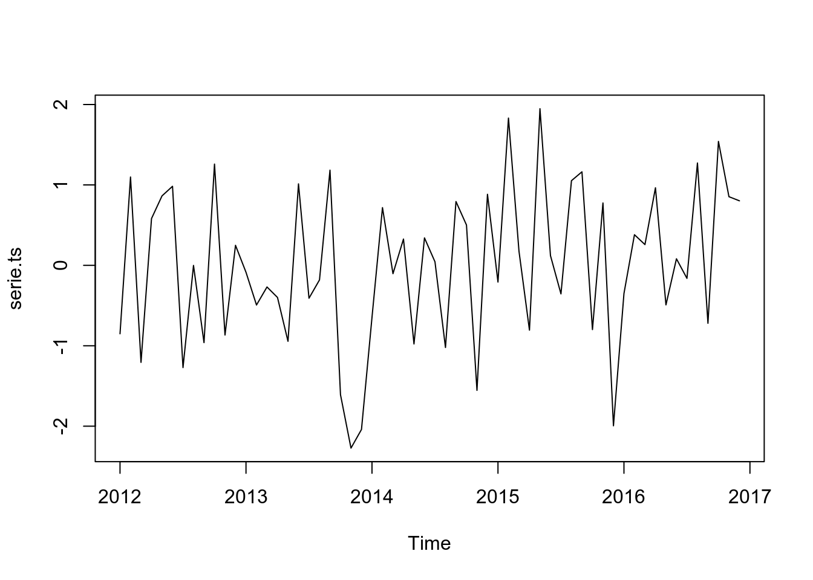
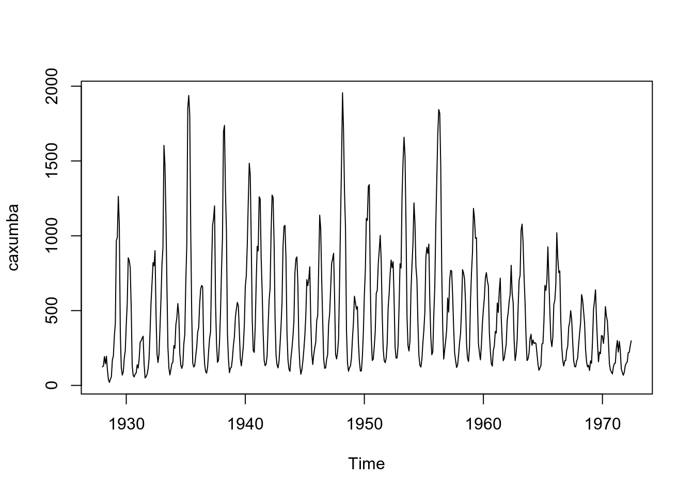
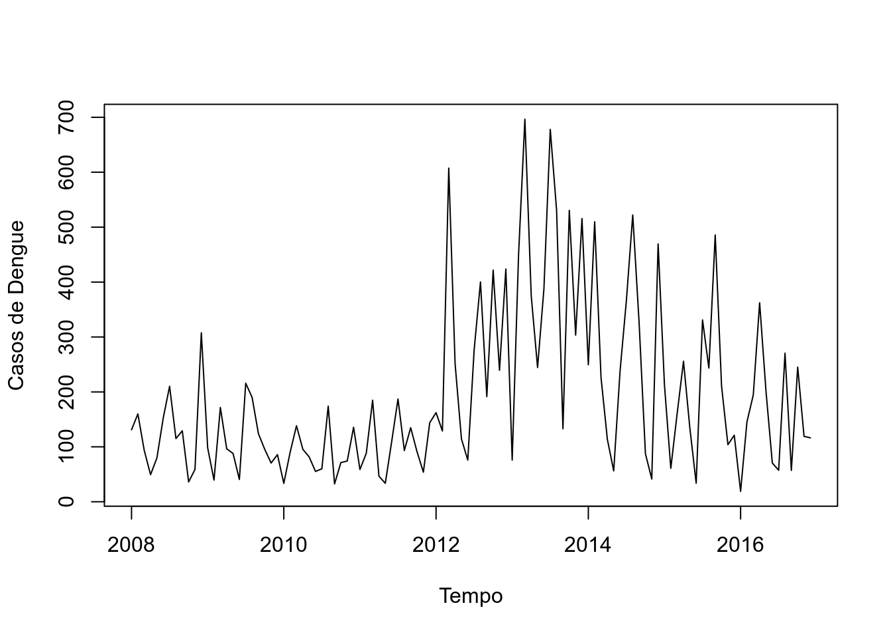
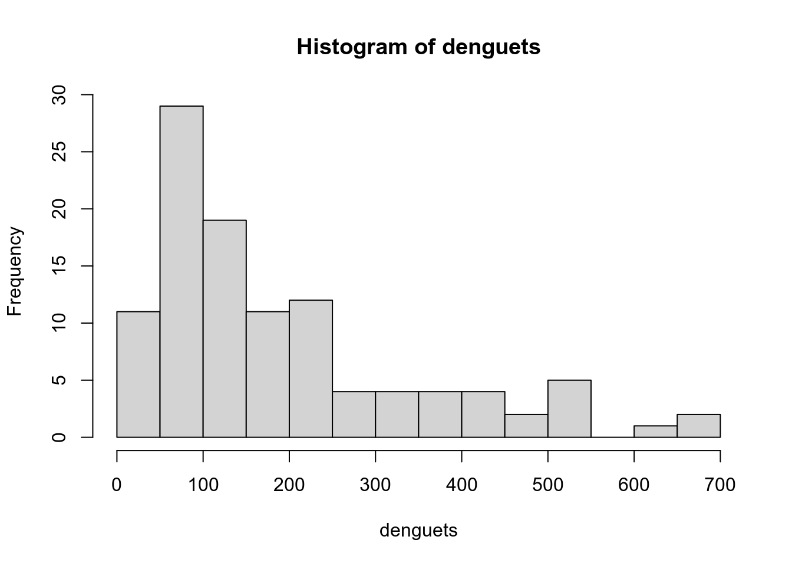
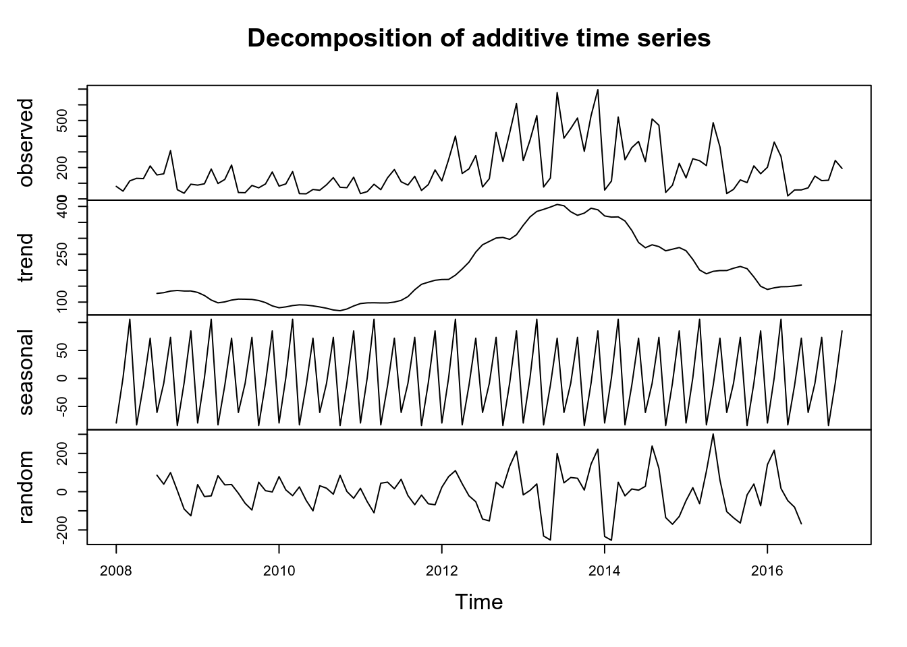
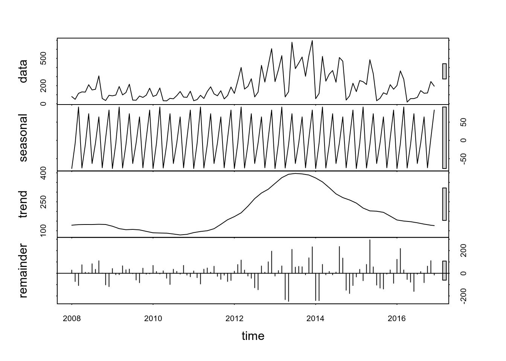
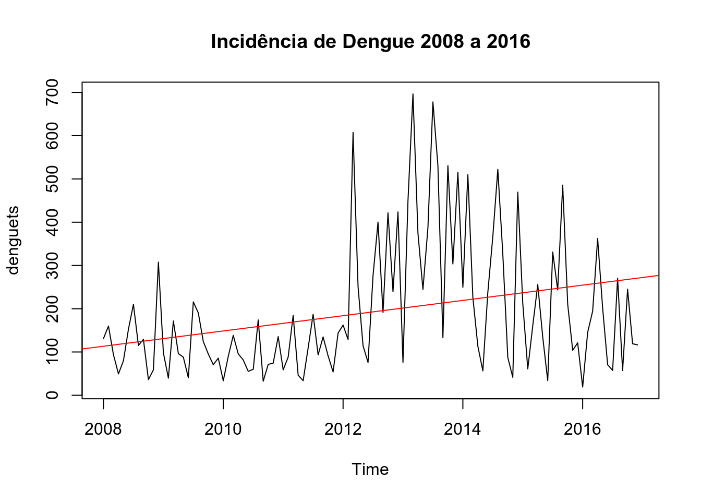
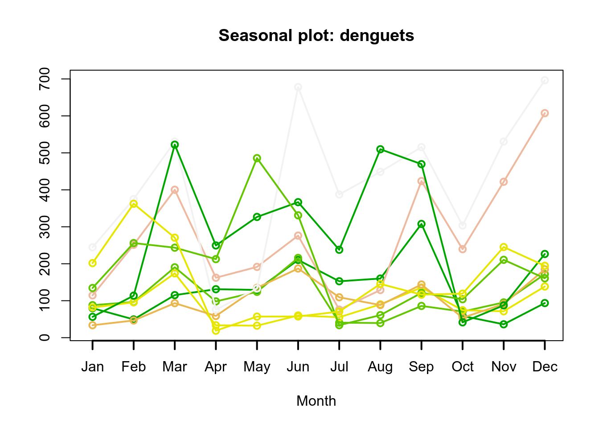

3 Introdução às Séries Temporais
3.1 O que são Séries Temporais ?
Definição: Entende-se por Séries Temporariais (ST) todo e qualquer conjunto de dados (absolutos ou relativos, discretos ou contínuos), ordenados cronologicamente em intervalos regulares de tempo.
Condição: Esses dados seguem uma ordenação em função do tempo (dependencia temporal).
De modo geral, as ST apresentam sequências de observações relativas a determinada variável ao longo de um intervalo específico de tempo (dia, mês, trimestre, ano, etc.), isto é, referem-se a fluxos de valores periódicos, os quais dão uma visão geral sobre o andamento ou comportamento da variável em análise.
A maneira mais comum de visualizar séries temporais é usar um gráfico de linhas simples, em que o eixo horizontal representa os incrementos de tempo e o eixo vertical representa a variável que está sendo medida.
Seguem abaixo alguns exemplo de séries temporais:

As ST podem ser de natureza regular ou irregular.
As ST regulares ou uniformes são aquelas que podem ser expressas sempre o mesmo intervalo de tempo (ex: dia, hora, minuto, segundo).
As ST irregulares ou não uniformes podem ser expressas em períodos de tempo diferentes (ex: semana, mês, semestre, ano) e/ou apresentar dados ausentes (missing data). Há meses com 28, 29, 30, 31 dias. O ano pode ser bissexto. Podemos estar interessados em mensurar os dados em semanas epidemiológicas. Como estamos trabalhando com dados agregados, nesses casos podemos trabalhar com a média ou o somatório dos dados nesse período e tratar tais ST como sendo de natureza regular. Já quando os dados estão ausentes, podemos interpolar os dados mensurados em um determinado período e/ou imputar os dados de forma que a ST também passe a ser considerada regular.
3.2 Hipóteses básicas do estudo das ST
Há um sistema causal relacionando as variáveis no tempo;
Ao longo do tempo, o sistema influencia todos os dados sob análise, de modo regular e permanente;
Os dados históricos refletem a influência média de um conjunto de fatores.
Tais hipóteses se baseiam no pressuposto de que as relações apontadas pela experiência pregressa permitem prever o possível comportamento das variáveis sob análises, determinando se seu comportamento apresenta propriedades determinísticas e/ou aleatórias.
3.3 Classificação dos tipos de ST
Contínuas: A informação é obtida em qualquer intervalo de tempo (podendo ser discretizando em intervalos iguais) ou é acumulada por período. Ex: Temperatura, pluviosidade, partículas em suspensão.
Discretas: Observações obtidas em intervalos de tempo discreto e equidistantes (ano, mês, dias, semanas epidemiológicas). Ex: Mortalidade infantil, notificações por DIC.
Multivariada ou Multidimensional: São várias coleções de observações para a mesma sequência de períodos de tempo, ou seja,envolvem mais de uma série histórica. Ex: Número de homicídios e acidentes no Sudeste.
3.4 Processo Estocástico
Um processo estocástico pode ser pensado de duas formas:
um conjunto de possíveis trajetórias de um fenômeno físico que poderiam ser observadas;
um conjunto de variáveis aleatórias uma para cada tempo \(t\).
Cada valor observado de uma trajetória é um dos possíveis valores que poderiam ter sido observado, de acordo com a distribuição de probabilidades da respectiva variável aleatória.
Definir uma ST consiste em determinar as funções matemáticas que apontam suas componentes básicas e permitem prever a evolução dos fenômenos estudados (como um eventual crescimento ou decrescimento futuro).
As ST podem ser matemátia mente representadas por funções do tipo:
\[Z_t = f(tempo, a)\]
Sendo \(Z_t\), o valor da variável \(Z\) no tempo \(t\) e \(a\) a componente aleatória associada à função matemática do tempo.
- Série com a mesma estrutura: cada série é uma possível realização do mesmo processo estocástico.

Trajetória ou série temporal ou função amostral
3.5 Notação e Nomenclatura
Matematicamente, uma série temporal discreta é representada por: \(Z_t = (Z_1 , Z_2 , Z_3 , ... , Z_n)\), sendo: \(Z\), a variável observável e \(t = 1,2,...,n\), o parâmetro do tempo.
Utilizando o exemplo óbitos por causa por local:

3.6 Objetivos : análise de ST


3.7 Estacionariedade
- Uma série temporal é dita estacionária quando ela se desenvolve no tempo aleatoriamente ao redor de uma média constante e com uma variância constante, refletindo alguma forma de equilíbrio estável.

Na prática, a maioria das séries que encontramos apresentam algum tipo de não estacionariedade, por exemplo, tendência.
O modelo mais simples de uma ST estacionária pode ser representado por:
\[Z_t = \mu + a_t\]
Sendo \(\mu\) a média do processo temporal e \(a_t\) a componente aleatória, chama de Ruído Branco em análises de ST.
A estacionariedade da ST pode ser:
1\(^a\) ordem - média constante ao longo de todo o período
2\(^a\) ordem - variância constante ao longo de todo o período
3.7.1 Função de Autocovariância de um processo estacionário
\[\gamma_h = E{\{[Z_t - E(Z_t)][Z_{t-h} - E(Z_{t-h})]\}}\]
A covariância não depende do tempo, mas da distância entre as observações.
Um processo é considerado fracamente estacionário se:
\(E(Z_t)=\mu\), \(\forall t\) (constante)
\(var(Z_t) = \sigma^2\), \(\forall t\) (constante)
\(Cov(Z_t, Z_{t-h}) = \gamma_h\), \(\forall t\) (não depende do instante no tempo, apenas da distância h)
Sendo o ruído branco uma variável aleatória \(a_t\), com média zero e variância \(\sigma²_a\):
\(a_t \sim N(0, \sigma^2_a)\)
\(Cov(a_t, a_{t-h}) = 0\), \(\forall h \neq 0\) (Não correlacionados)
3.7.2 Porque a Estacionariedade é Importante ?
A maioria das técnicas estatísticas utilizadas em séries temporais supõe que estas sejam estacionárias, caso não a ST não seja estacionária, será necessário transformar os dados originais se estes não formam uma série estacionária.
A transformação mais comum consiste em tomar diferenças sucessivas da série original, até se obter uma série estacionária.
A primeira diferença de \(Z_t\):
\[\Delta Z_t = Z_t - Z_{t-1}\]
A segunda diferença de \(Z_t\):
\[\Delta^{2} Z_t = \Delta[\Delta Z_t] = \Delta[Z_t - Z_{t-1}]\]
A n-ésima diferença de \(Z_t\):
\[\Delta^{n} Z_t = \Delta[\Delta^{n-1} Z_t]\]
Logaritmo dos dados - Estabilizar a variância
\[\Delta log Z_t = log Z_t - log Z_{t-1}\]
Transformações Box-Cox
Pode-se diferenciar tantas vezes quanto necessário até estabilizar (não + que duas diferenças);
Como saber se um processo é estacionário ?
Visualmente, através da decomposição
Testes Estatísticos, ex: Dickey-Fuller
3.8 Componentes de uma Série Temporal
Tendência
Sazonalidade
Ciclo
Aleatório (Erro)

Fonte: Minerva’s Data Lab, Cambridge, Reino Unido
3.9 Independência
Os métodos usuais de análise estatística de dados têm como pressuposto básico a independência dos eventos (casos). Ou seja, a ocorrência de um caso de doença em uma dada pessoa é independente da ocorrência em outra pessoa.
Pressupostos básicos para uma análise de regressão:
\(E(e_i) = 0\)
Variância \(\sigma^2\) constante (homocedasticidade);
\(e_i \sim N(0, \sigma^2)\)
\(e_i \neq e_j\), são independentes
Na análise da incidência de doenças (ou qualquer outro indicador ecológico) ao longo do tempo isso não é verdade: a incidência em um determinado dia/mês ou ano em geral é correlacionada com a ocorrência no dia/mês/ano anterior.
Esta correlação é expressa em uma função denominada função de autocorrelação.
3.10 Dependência
Quanto a dependência uma ST pode possuir:
Independência (sem dependência serial): série puramente aleatória ou ruído branco;
Memória longa: a dependência desaparece lentamente (os valores de pontos no passado influenciam momentos muito adiante no tempo - exemplo: doenças com grande latência);
Memória curta: dependência desaparece rapidamente (doenças de alta infecciosidade e “explosivas”" - exemplo: gripe).
3.11 Função de Autocorrelação (FAC)
O coeficiente de correlação entre \(Z_{t}\) e \(Z_{t-h}\) é chamado de autocorrelação de h-ésima ordem e é denotadado por:
\[ {\rho}_{k}=\frac {Cov\left({Z}_{t},{Z}_{t-h} \right)}{\sqrt{Var\left({Z}_{t},{Z}_{t-h} \right)}} =\frac{Cov\left({Z}_{t},{Z}_{t-h} \right)}{Var\left({Z}_{t} \right)} =\frac{{\gamma}_{k}}{{\gamma}_{0}} \]
Temos então:
\({\rho}_{0}=1\)
\(-1\leq {\rho}_{l} \leq 1\)
Um conjunto de autocorrelações, \(\left\{\rho_{h}\right\}\), é chamado de função de autocorrelação de \(Z_{t}\). Para uma dada amostra, \(\left\{Z_{t}\right\}_{t=1}^{T}\), suponha que \(\overline{Z}\) é a média amostral. Então, a autocorrelação amostral de primeira ordem de \(Z_{t}\) é:
\[ {\hat{\rho}}_{1}=\frac{\sum _{t=2}^{T}{\left({Z}_{t}-\overline{Z}\right) \left({Z}_{t-1}-\overline{Z}\right)}}{\sum_{t=1}^{T}{{\left({Z}_{t}-\overline{Z}\right)}^{2}}} \]
que é um estimador consistente de \({\rho}_{1}\). Em geral, a autocorrelação amostral de h-ésima ordem de \(Z_{t}\) pode ser definida como:
\[ {\hat{\rho}}_{h}=\frac{\sum_{t=h+1}^{T}{\left({Z}_{t}-\overline{Z}\right) \left({Z}_{t-h}-\overline{Z} \right)}}{\sum_{t=1}^{T}{{\left({Z}_{t}-\overline{Z}\right)}^{2}}} \] para \(0\leq h \leq T-1\).
Por exemplo, suponha que você está avaliando uma série temporal qualquer e quer visualizar como as defasagens da série podem impactar seu valor atual (ou seja, se \(Z_{t}\) é relacionado com \(Z_{t-h}\) para \(k\ge1\)). A função de autocorrelação pode ser usada para obter tal informação.
Num primeiro momento, visualize os dados da série para 10 lags (defasagens). Observe que os lagss se tornam novas colunas e na medida que elas aumentam, incrementa-se as linhas sem observações.
Apesar da simples correlação entre os dados nos ajudar a identificar defasagens que poderíam contribuir para o comportamento da série em \(t\), precisamos fazer uso de testes estatísticos que verifiquem a significância da relação entre o valor atual e suas lags. Neste sentido, a função de autocorrelação tem grande importância.
Abaixo, um exemplo de função de autocorrelação. Observe que há duas linhas horizontais que representam os limites do teste de significância sendo que valores acima ou abaixo da linha são estatisticamente significantes. Neste documento, apresentaremos o teste que é realizado.

- O correlograma é uma das principais ferramentas de análise exploratória em séries temporais, pois indica como cada valor em um dado instante de tempo \(t\) se relaciona com os valores em \(t+1, t+2,...,t+j\)
Para um dado \(k\), os resultados da Função de Autocorrelação podem ser testados usando um teste que verifique se:
\[ \begin{aligned} && H_{0}: \rho_{h}=0 \\ && H_{1}: \rho_{h}\neq 0 \end{aligned} \]
3.12 Componentes de uma Série Temporal
- A ST pode ser desmembrável em componentes sistemáticas (apontam movimentos regulares) e não sistemáticas (apontam movimentos irregulares).
São elas:
Componentes Sistemáticas
Tendência
Sazonalidade
Ciclo
Componentes Não Sistemáticas
- Aleatória ou Ruído Branco
As análises exploratórias de ST buscam isolar e interpretar as componentes. Tais componentes podem atuar de maneira isolada ou inter-relacionadas.
3.13 Tendência
É a indicadora da direção global dos dados (ou movimento geral da variável), do percurso traçado e de sua linha contínua;
É o efeito de longo prazo na média. Pode ser o aumento ou redução a longo prazo…

3.14 Ciclo
Os ciclos são oscilações (proximadamente regulares) em torno da tendência. Podem dever-se a fenômenos naturais, socioculturais ou econômicos, como variações climáticas (ex: excesso ou falta de chuva pode produzir ciclos agrícolas)
Variações que apesar de periódicas não são associadas automaticamente a nenhuma medida do calendário;
Aumento ou redução de frequência sem intervalos fixos.
Ex: Ciclos Econômicos e Ciclos de epidemias.

3.15 Sazonalidade
São cilcos de curto prazo (não maiores que um ano), em torno da tendência;
Costumam se referir a eventos ligados a estação do ano, vinculados ao calendário e geralemnte repetidos a cada doze meses.
Efeitos ligados à variações periódicas (semanal, mensal, anual, etc.);
Padrões que ocorrem em intervalos fixos.
Ex: Medidas de Temperatura (aumenta no verão e diminui no inverno).

A diferença entre os ciclos, propriamente ditos, e a sazonalidade, é o período de avaliação (curto e longo);
A semelhança entre ambos, é que definem oscilações relativamente regulares em torno da tendência.
3.15.1 Como detectar a sazonalidade ?
Visualmente
- Boxplots
- seasonplot
- monthplot
- decomposição
Muito raramente por testes Estatísticos (ex: Kruskall-Wallis)
3.16 Termo Aleatório ou Ruído Branco
Conceitualmente, a componente aleatória é uma mistura de pertubações bruscas, irregulares e esporádicas nos movimentos das séries que tipificam os fenômenos. Na realidade é resultante dos efeitos de múltiplas causas.
Exemplos típicos de eventos aleatórios:
- Secas - Enchentes - Terremotos - Epidemias - Crise política - Conflitos Socioeconomicos
3.17 Composição dos Modelos de uma ST
- A série pode ser descrita como sendo a soma dos componentes (tendência, sazonalidade, ciclicidade e termo aleatório).
3.17.1 Modelo Aditivo
\[Z_t = T_t + S_t + C_t + a_t\]
sendo \(t = 1,2, ..., N\)
- Essa composição de modelo sugere que a variação sazonal parece constante, não muda quando da série temporal aumenta.
3.17.2 Modelo Multiplicativo
\[Z_t = T_t . S_t . a_t\]
- Essa composição de modelo sugere que a sazonalidade varia em conjunto com a tendência (aumenta de amplitude quando aumenta a tendência), que pode ser transformado em aditivo usando \(log\).
\[log(Z_t) = log(T_t . S_t . a_t) = log(T_t) + log(S_t) + log(a_t)\]


3.19 Prática no R
3.19.1 A função ts é a mais utilizada no pacote R.
data: um vetor ou matriz com dados para a série
start: tempo da primeira observação
end: tempo da última observação
frequency: quantidade de observações por unidade de tempo, podendo representar: Anual = 1, Trimestral = 4, Mensal = 12 e Semanal = 52
3.19.2 Simulando uma Série Temporal
library(forecast)
library(ggplot2)
library(urca)
library(lmtest)
library(seasonal)
library(seasonalview)
# Uma serie temporal normalmente distribuida
myts = rnorm(60)
myts = ts(myts,start = c(2012,1), end=c(2016,12), frequency=12)
plot(myts)
3.19.3 Importando uma tabela em formato de Série Temporal
# Para escolher o diretório
# tempts = read.csv(file.choose(), sep=",",header = F)
tempts = read.csv("~/Documentos/cursos_ecologicos_2019/dados/exemplo.csv", sep=",",header = F)
tempts = ts(tempts[2],start = 1884, end=1939, frequency=1)
class(tempts)[1] “ts”

3.19.4 Utilizando um banco de dados real em uma análise de Série Temporal
- Incidência de dengue nas Filipinas, 2008 - 2016
Colocando em formato de Série temporal utilizando a biblioteca ts do R.
# Convertendo os dados para o formato de Séries Temporais
# A frequency=12 foi especificado pois queremos mostrar dos dados mensais
# dengue_original=read.csv("denguecases2.csv")
denguecasests=ts(dengue_original$Dengue_Cases,start=c(2008,1),end=c(2016,12),frequency=12)
plot(denguecasests, ylab="Casos de Dengue", xlab="Tempo")
Verificando e testando a autocorrelação dos casos de dengue.
\[ \begin{aligned} && H_{0}: \rho_{h}=0 \\ && H_{1}: \rho_{h}\neq 0 \end{aligned} \]

Box-Ljung testdata: denguecasests X-squared = 171.88, df = 20, p-value < 2.2e-16
Através do gráfico e do teste do ACF, é possível verificar que os a incidência de dengue é altamente correlacionada ao longo do tempo.
- Fazendo uma análise descritiva da série temporal.
[1] 696.5617
[1] 18.94775
[1] 192.0458
[1] 134.6233
Min. 1st Qu. Median Mean 3rd Qu. Max. 18.95 81.18 134.62 192.05 246.27 696.56
[1] 108
[1] 2008 1
[1] 2016 12
[1] 12


Mudando a janela de tempo da série temporal. Observando apenas os dados de Jan 2010 até Dez de 2012.

Decompondo a ST dos casos de dengue via o método clássico decompose

Decompondo a ST dos casos de dengue via STL (Seasonal and Trend decomposition using Loess)
- É mais robusta, é mais sensível a vários tipos de sazonalidade e lida melhor com os outliers.

STL: A seasonal-trend decomposition procedure based on loess

Trend <- decom_dengue$trend
Seasonal <- decom_dengue$seasonal
Random <- decom_dengue$random
ts.plot(cbind(Trend, Trend * Seasonal), lty = 1:2)Refazendo o sinal original da ST através das componentes.
recomposed_dengue = Trend+Seasonal+Random
par(mfrow=c(1,2))
plot(denguecasests, ylab="Incidência Dengue", main="Original")
plot(as.ts(recomposed_dengue), ylab="Incidência Dengue", main="Recomposta")
Em algumas ST não é fácil avaliar suas componentes de maneira visual, ou seja, de maneira gráfica. Para podemos avaliar melhor precisamos utilizar alguns testes estatísticos que possíbilitem tal avaliação.
Outra forma através do ggplot

3.19.5 Avaliando a Estacionariedade da ST
Segundo o teste de Dickey-Fuller:
\(H_{0}\): A ST não é Estacionária
\(H_{1}\): A ST é Estacionária
Alguns exemplos:
 {out.width = “100%”}
{out.width = “100%”}
Testando a estacionariedade da série dos casos de dengue:
Augmented Dickey-Fuller Testdata: denguecasests Dickey-Fuller = -2.0782, Lag order = 4, p-value = 0.5442 alternative hypothesis: stationary
Como p-valor = 0,5442, não rejeitamos a hipótese nula, ou seja, não há indícios da ST ser estacionária.
3.19.6 Avaliando a tendência em uma ST
Cosntruindo uma reta baseado no modelo de regressão linear smples para verificar tendência da incidência da dengue.
plot(denguecasests, main = "Incidência de Dengue 20080 and 2016")
abline(reg=lm(denguecasests ~ time(denguecasests)), col = "red")## plotting the trend line of linear regression
Cosntruindo uma curva suavizada baseada na função lowess para verificar tendência da incidência da dengue.
plot(denguecasests, ylab="Casos de Dengue", xlab="Tempo")
library(Kendall)
lines(lowess(time(denguecasests),denguecasests),lwd=3, col=2)
Uma outra forma de mostrar a tendência da ST, fazendo a média anual. Observe que a curva se parece um pouco com a curva do loess porém menos suave.

3.19.7 Avaliando a Sazonalidade da ST
De maneira visual podemos utilizar algumas técnicas gráficas, tais como:
Boxplot

Monthplot

Seasonplot

Outrs possibilidades de fazer utilizando a biblioteca ggplot


Segundo o teste de Kruskall-Wallis:
\(H_{0}\): Não existe diferença entre os períodos, ou seja, a série não apresenta sazonalidade
\(H_{1}\): Existe diferença em pelo menos um período em relação aos demais, ou seja, há indícios da ST apresentar sazonalidade
Kruskal-Wallis rank sum testdata: denguecasests by cycle(denguecasests) Kruskal-Wallis chi-squared = 20.012, df = 11, p-value = 0.04517
Neste caso, podemos dizer que existe indícios da da série apresentar períodos que são maiores ou menores que outros.
3.20 Transformação
par(mfrow=c(2,2))
#serie original
plot(denguecasests, ylab="Casos", main="Original")
#lambda = 0, logaritmica
t1 = BoxCox(denguecasests,lambda =0 )
plot(t1, ylab="Casos", main="Lambda = 0, Logarítmica")
#gera labda automático
lbd = BoxCox.lambda(denguecasests)
# print(lbd)
t3 = BoxCox(denguecasests,lambda =lbd )
plot(t3, ylab="Casos", main="Labda Automático")
#diferenciacao
t4 = diff(denguecasests)
plot(t4, ylab="Casos", main="Diferenciação")
3.21 Exercícios Propostos
Utilizando os bancos: ldeaths (do próprio R) e denguecases2.csv, nesse último supondo alguma janela de tempo mensal com 6 anos, e faça:
Uma análise exploratórias dos dados em formato ST;
Decomponha a ST;
Através de análises gráficas e/ou testes estatísticos, avalie e verifique a existencia de cada componente.
3.22 Material on line sobre Séries Temporais
Time Series Task View:
https://cran.r-project.org/web/views/TimeSeries.html
Blog, Ebook and Forecast Documentation by Rob Hyndman:
https://otexts.org/fpp2/intro.html
Stackoverflow Community:
3.23 Bibliografia sugerida
FERREIRA, Pedro Guilherme Costa. Análise de Séries Temporais em R: curso introdutório. 2018.
METCALFE, Andrew V.; COWPERTWAIT, Paul SP. Introductory time series with R. Springer-Verlag New York, 2009.
MORETTIN, Pedro A.; TOLOI, Clélia M.C. Análise de Séries Temporais: Modelos Lineares Univariados. Bluscher - ABE - Projeto Fisher. Edição 3, 2018.
WOODWARD, Wayne A.; GRAY, Henry L.; ELLIOTT, Alan C. Applied time series analysis with R. CRC press, 2017.